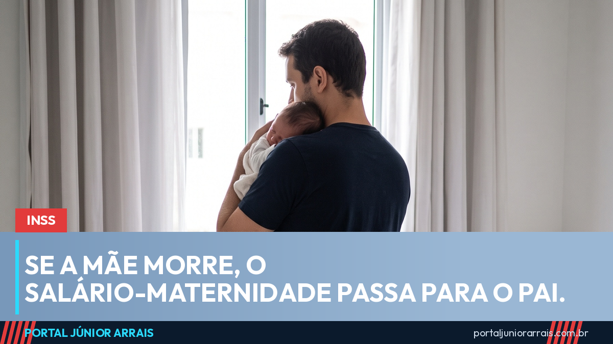

Salário-maternidade pode ser pago ao pai quando a mãe morre: veja as regras do INSS

O nome engana, mas o salário-maternidade não é só da mãe. Quando a segurada que tinha direito ao benefício morre, o pagamento passa para o cônjuge ou companheiro sobrevivente que também seja segurado do INSS, pelo tempo que faltava. A regra está no art. 71-B da Lei 8.213/91 e vale também quando quem morre é o segurado que recebia o benefício por adoção.
Quem tem direito
Para o pai, ou o companheiro ou companheira, receber, é preciso que:
- a pessoa que morreu tivesse direito ao salário-maternidade, por parto ou por adoção;
- o sobrevivente seja segurado do INSS — empregado, contribuinte individual, MEI, facultativo ou segurado especial — e cumpra os requisitos do benefício na própria condição, como a carência, quando exigida;
- a criança esteja viva e sob os cuidados do sobrevivente: o benefício não é pago em caso de falecimento do filho ou de seu abandono.
Quanto tempo dura e quanto vale
O benefício é pago pelo período que faltava para completar os 120 dias a que a mãe teria direito. Se ela morreu no parto, o pai recebe praticamente o período inteiro.
O valor é calculado com base na situação do próprio sobrevivente, e não na da pessoa que morreu. Para o empregado com carteira assinada, corresponde ao seu salário; para quem contribui como autônomo ou MEI, segue as regras de cálculo da sua categoria.
Como pedir e o prazo
O pedido deve ser feito até o último dia do prazo que a mãe teria para receber o benefício (art. 71-B, § 1º). Não dá para esperar: depois que esse período acaba, o direito se perde. O requerimento é feito pelo aplicativo ou site do INSS, ou pelo telefone do INSS, com certidão de nascimento ou termo de guarda para adoção, certidão de óbito e documentos pessoais.
Afastamento do trabalho
Para o empregado, a CLT também acompanha a regra. O art. 392-B assegura ao cônjuge ou companheiro empregado, em caso de morte da mãe, o gozo de licença por todo o período da licença-maternidade ou pelo tempo restante, exceto se o filho falecer ou for abandonado. Durante esse período, o emprego fica protegido, e a empresa não pode exigir o trabalho.
Esse direito é diferente da licença-paternidade comum, que tem regras próprias, explicadas nesta matéria sobre licença-paternidade.
Pai solo que adota
O homem que adota ou obtém guarda judicial para fins de adoção sozinho também tem direito ao salário-maternidade de 120 dias, pelo art. 71-A da Lei 8.213/91, nas mesmas condições da mulher. O passo a passo da adoção está nesta outra matéria sobre adoção no Brasil.
Quando o pai não é segurado
Se o sobrevivente não contribui para o INSS, ele não recebe o salário-maternidade pelo art. 71-B. Nesse caso, vale verificar outros direitos da criança, como a pensão por morte, que é paga aos filhos de quem era segurado.
Se o pedido for negado, o sobrevivente pode recorrer ao Conselho de Recursos da Previdência Social, pelos mesmos canais do INSS, no prazo de 30 dias.
Cuidado com golpe
Num momento de luto, a família pode receber ligações de falsos atendentes oferecendo "agilizar" o salário-maternidade ou a pensão mediante pagamento. O INSS não cobra para analisar pedidos nem liga pedindo Pix.
Também não compartilhe códigos recebidos por SMS nem a senha do gov.br. Com eles, golpistas conseguem desviar benefícios para outra conta.
Conteúdo informativo — não substitui orientação individualizada sobre o seu caso.
Júnior Arrais · Advogado e editor do Portal Júnior Arrais
Advogado (OAB/MG 193.054, OAB/SP 535.563, OAB/RJ 268.781, OAB/PE 71.237, OAB/AL 24.340-A, OAB/PA 41.782-A e OAB/PR 138.540), atuante em direito previdenciário e trabalhista, e comunicador de Ubá (MG). Escreve todos os dias sobre benefícios sociais, INSS, trabalho e economia do dia a dia, a partir do Diário Oficial, de portarias e de fontes oficiais, em linguagem simples. Conheça a linha editorial e a política de correções do portal.